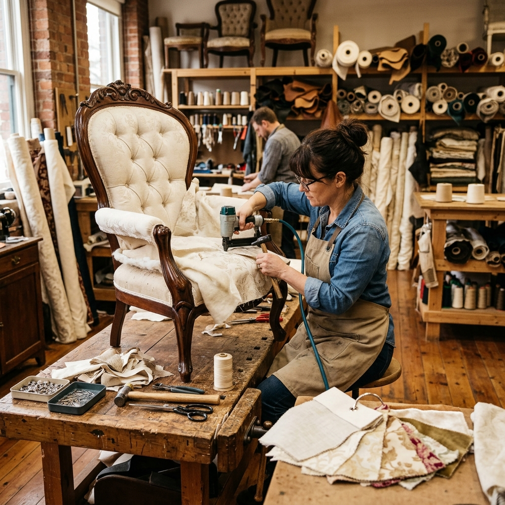
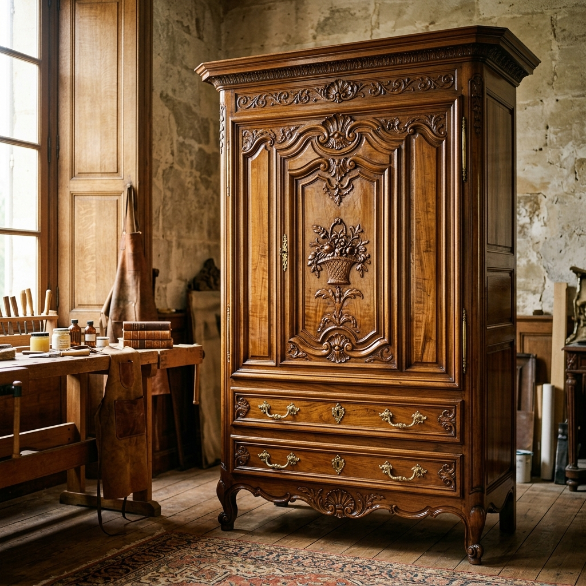
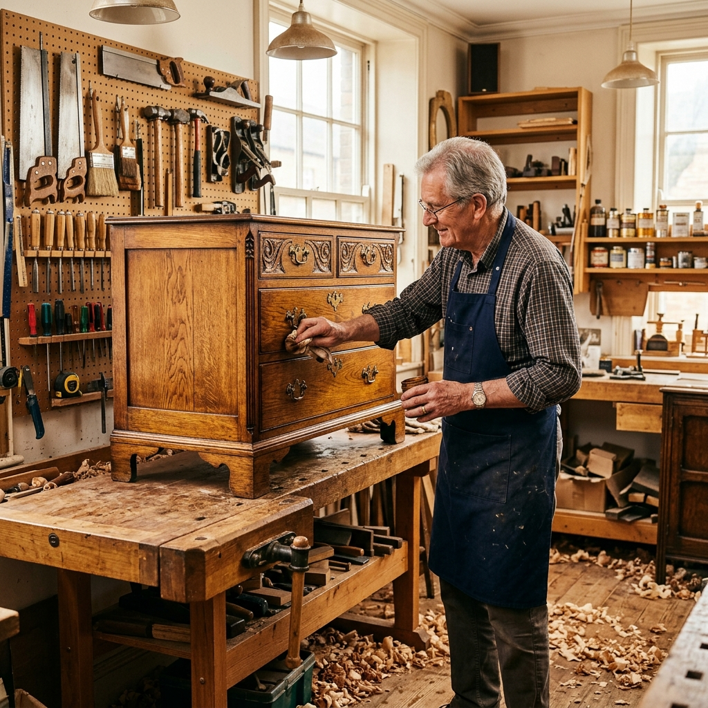
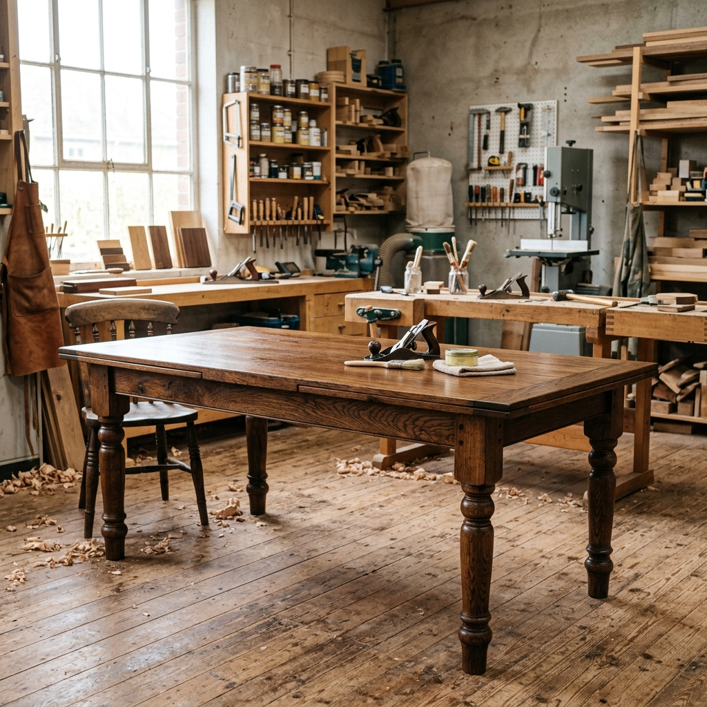
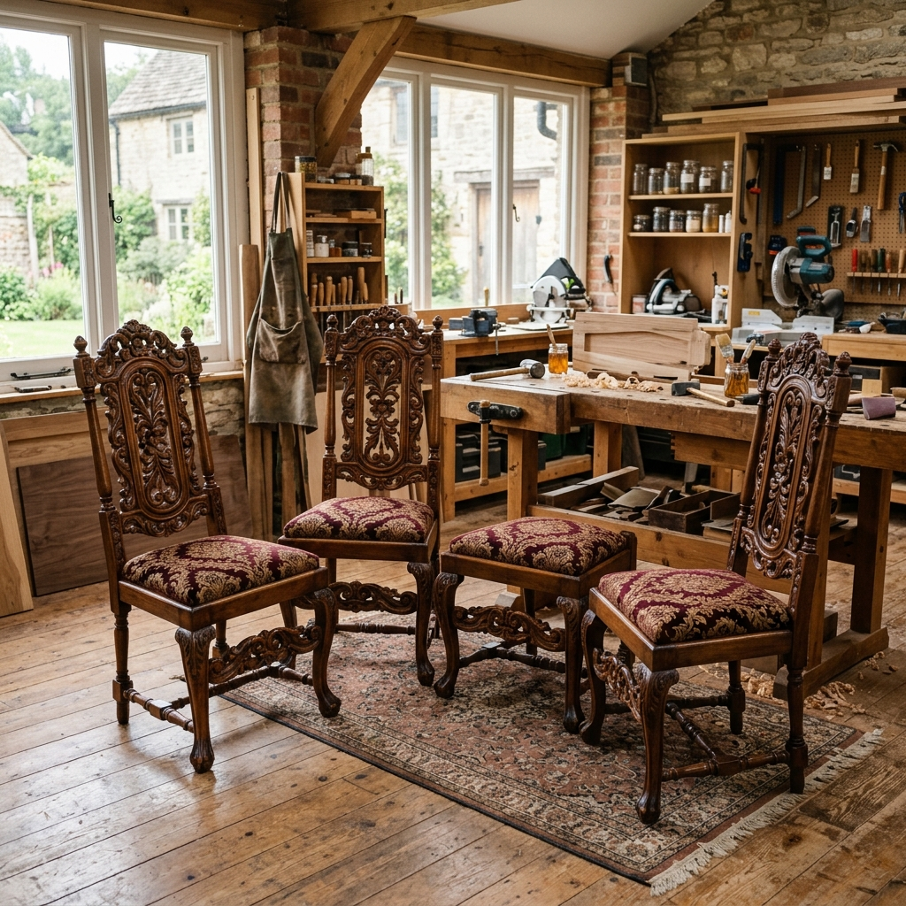
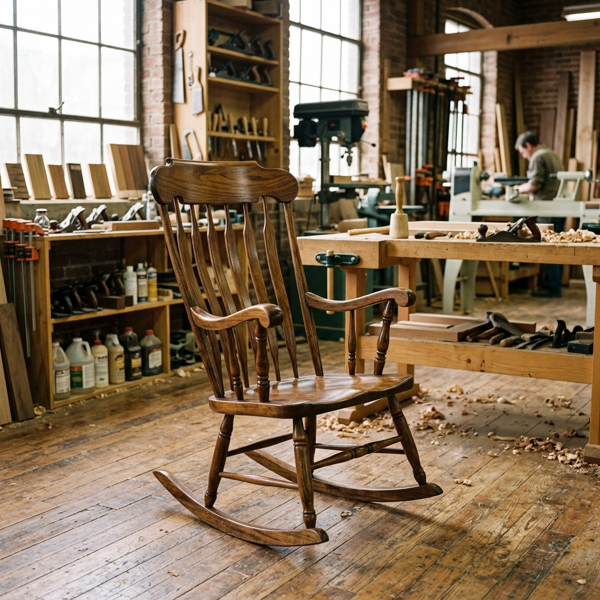
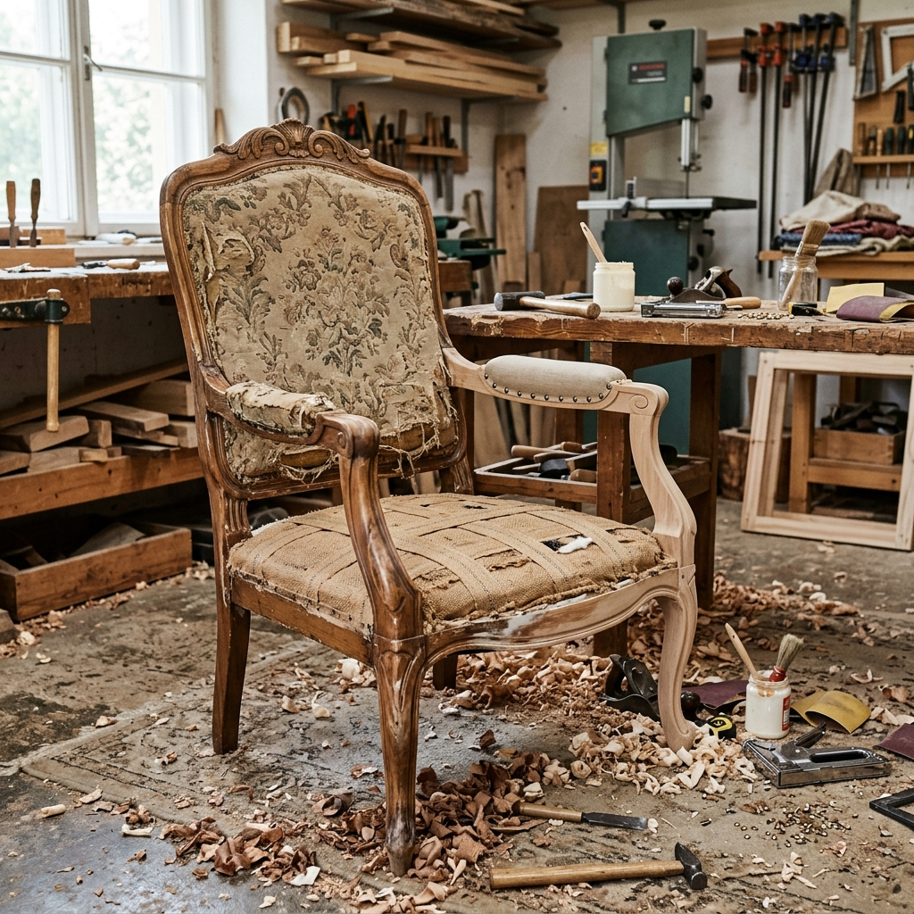
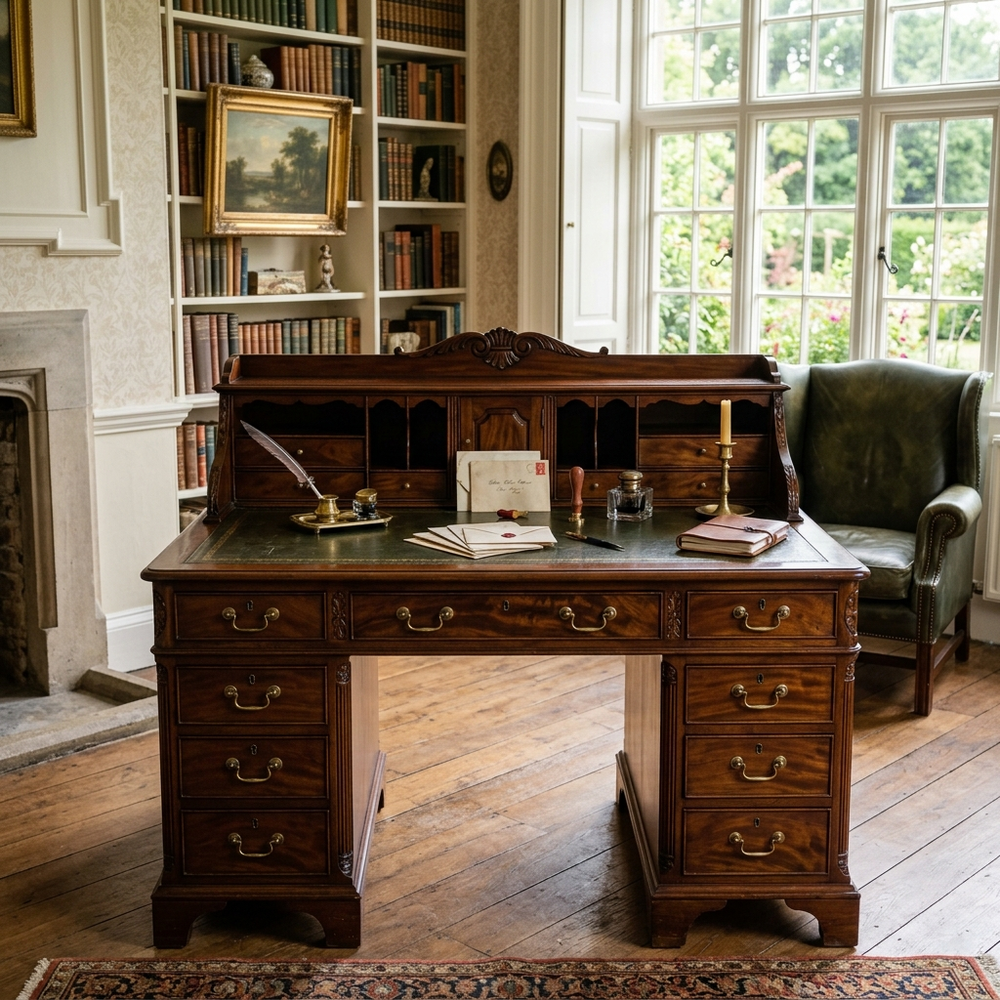
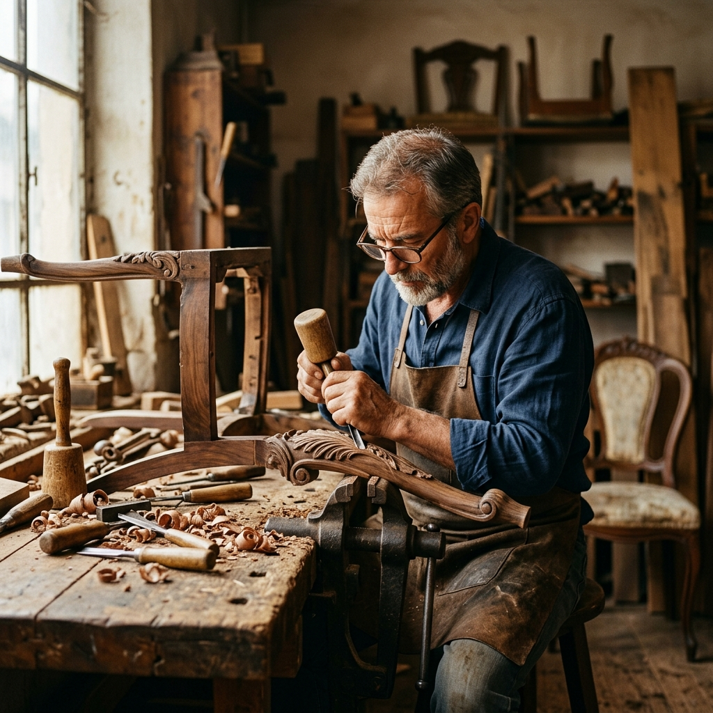

Choose Your Furniture & Book
Browse by furniture category, select the service you need, and book your restoration in minutes.
Comprehensive Furniture Care

Wood Restoration
Scratches, dents, loose joints, stripped veneer, cracked surfaces — we address every form of wood damage using traditional hand techniques and period-appropriate finishes.

Upholstery & Fabric
Full re-upholstery, foam and spring replacement, button tufting, piping, and fabric sourcing. We work with leather, velvet, linen, cotton, and period-correct historical textiles.

Antique Conservation
Museum-grade conservation for pre-1900 and significant 20th-century pieces. Marquetry, gilding, hardware restoration, and patina preservation. Insurance-approved condition reports available.

Structural & Emergency Repair
Broken legs, collapsed frames, snapped rails — we rebuild structural integrity using period-correct joinery techniques, ensuring your piece is stable for generations to come.
How Your Restoration Works
Enquire
Submit your enquiry online or call us. We'll confirm receipt within 2 hours.
Assess
Free collection or in-workshop assessment. Detailed quote within 48 hours.
Restore
Your piece is restored by a dedicated specialist with photo updates throughout.
Return
White-glove delivery back to your home, with a 12-month workmanship guarantee.
Authenticity in Every Detail
We use only historically appropriate materials, sourced from specialist suppliers worldwide.
From Our Workshop






Before & After Showcase
See the dramatic transformations our craftsmen achieve — every detail matters.
 Before
After
Before
After
Georgian Writing Desk
Stripped veneer, broken leg, cracked top — fully restored with period shellac finish.
 Before
After
Before
After
Chesterfield Sofa Re-upholster
Full leather replacement, spring re-tying, button tufting — returned to showroom glory.
 Before
After
Before
After
Art Deco Sideboard
Marquetry inlay repair, walnut veneer replacement, and hand-buffed lacquer finish.